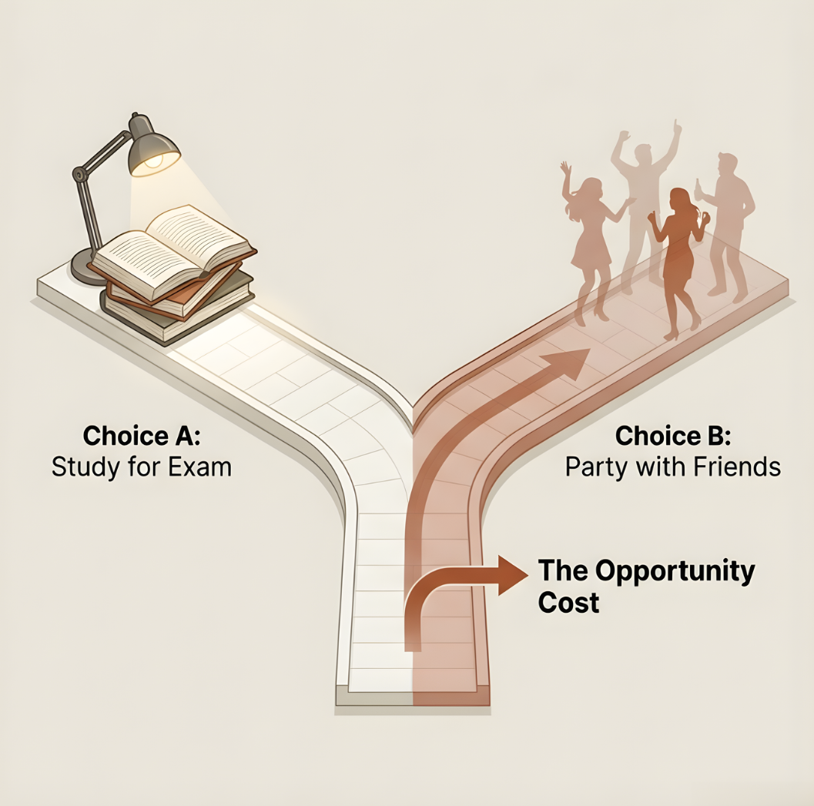
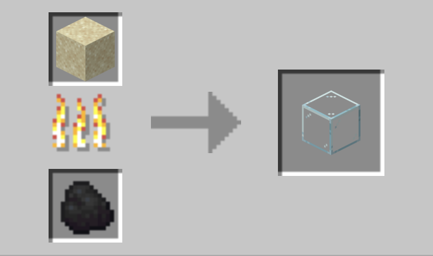

Q1: What is opportunity cost? Give a one-sentence definition.
Q2: Name one economic model we discussed in Chapter 2.
Q3: Is this positive or normative? "The U.S. should ban Chinese electronics."
Today: We combine opportunity cost + models → the PPF.
ECON 1116 • Principles of Microeconomics • Chapter 3
Dr. Richeng Piao
Department of Economics
Northeastern University
3.1
Identify the four factors of production and distinguish production efficiency from allocative efficiency
3.2
Draw and interpret a production possibilities frontier (PPF)
3.3
Calculate absolute and comparative advantage from a productivity table
3.4
Explain why trade based on comparative advantage benefits all parties
3.5
Describe how specialization expands consumption beyond the PPF
Q1: What is opportunity cost? Give a one-sentence definition.
Q2: Name one economic model we discussed in Chapter 2.
Q3: Is this positive or normative? "The U.S. should ban Chinese electronics."
Today: We combine opportunity cost + models → the PPF.

Answer to Q1
Opportunity cost = the value of the next-best alternative you give up when you choose one option over another.
It is NOT just the price you paid — it’s the price PLUS what else you could have done with that time / money / attention. Two students at the same lecture can have different OCs.
Today: we draw OC visually as the slope of a curve.
Recap
Ch 2 introduced the circular-flow model and the idea that economists simplify reality with assumptions to make predictions testable.
Today’s model is graphical : two choices on the X and Y axes — how do we pick the best combination given that resources are scarce ?
Most micro models in this course will sit on a 2-axis grid — getting comfortable with X/Y trade-offs is foundational.
Today’s X/Y trade-off
Pick TWO things, put one on each axis, and the curve shows which combinations are reachable given scarcity. We’ll call this curve the PPF in 10 minutes.
Answer: Normative — "should" is a value judgment. Economists can’t prove it true or false; we can only map the trade-offs.
Pros (claimed)
Cons (claimed)
Turn it positive with the PPF
Instead of "should we ban?", ask: "If we ban, do we end up at a point inside our PPF (we lose efficiency) or on a different PPF (resources reshuffle to less-productive uses)?" That’s a question economics can answer.
Two-Factor Authentication (2FA) July 2019
NEU IT rolled out 2FA via Duo — required for VPN, email, Canvas, and most campus services.
By enrolling in 2FA, you take an extra step every sign-in — protecting your identity, your data, and Northeastern’s research / IT infrastructure.
Three choices — you can’t maximize both:
EFFICIENCY
Time / Convenience
Choice 1: Balanced — 2FA on sensitive systems only
Choice 2: Too much? — 2FA every login (high friction)
Choice 3: Too little? — password only (2003-style)
SECURITY
Account / Data safety
Today’s chapter is about every choice that looks like this. Source: security.its.northeastern.edu/mfa.
A senior software engineer at a fast-growing startup could answer customer-support tickets faster than the three people on the support team.
Yet she never touches the support queue. She writes code that ships to two million users next quarter.
Why?
The company gives up a little ground on ticket response times. It gains far more from her finishing the new checkout flow.
Same logic, bigger scale
Apple’s engineers in Cupertino could in principle assemble iPhones too. Instead, the iPhone 16 Pro is fabricated by TSMC in Taiwan, packed with Samsung displays from South Korea, and assembled in India and Vietnam — across ~12 countries .
The senior engineer, Mario’s pizza shop, the iPhone supply chain — all explained by one idea: comparative advantage .
One of the most counter-intuitive and powerful insights in all of economics.
Section 1
LO 3.1 — Factors of production & the two efficiencies
Sand is just rocks . What useful things can humans actually make out of it?
The video you just watched showed a few. Here are the big ones:
🪟 Glass (windows, bottles)
🏗️ Concrete (cities)
💻 Silicon chips (your phone)
🔬 Fiber-optic cables
The same raw input becomes radically different products depending on how we transform it.

Even Minecraft gets it: sand + heat = glass.
The Transformation Process: From Resources to Products
Resources
Inputs
Sand (silicon ore) + workers + capital + R&D
Production Process
Fab (TSMC, Intel)
Production Method: photolithography, doping, etching, packaging — in cleanrooms costing $20B+ per fab.
Products
Outputs
Chips: A18 (iPhone), H100 (NVIDIA), M-series (Mac)
The economics question: sand is essentially free. The method that turns sand into a $1,000 chip is what costs decades of capital, training, and R&D — and that’s what every country fights to control.
Land
Natural resources — not just soil, but critical minerals like lithium for EV batteries and silicon for chips.
Labor
Human effort — plus "human capital" : education and training (like learning Python) that makes labor productive.
Capital
Manufactured goods used to make other goods (machines, trucks, fabs). Distinct from financial money.
Entrepreneurship
The risk-takers who combine the other three inputs to innovate — and bear the loss if it fails.
🍕 Concrete example: Mario’s Pizza (a few blocks from campus)
Land = the storefront + utilities. Labor = Mario’s 2 employees + his daughter’s part-time hours. Capital = deck oven, dough mixer, fridge, POS, pizza paddles, delivery scooter. Entrepreneurship = Mario himself — signs the lease, takes the loan, decides Sunday how much flour to order. None of the four alone makes pizza.
Same four ingredients, different recipes. The recipe — how much of each input you use — is what economists call technology . There is rarely one right answer.
Capital-Intensive
🚜 Industrial Farming
$$ machines + very few workers per acre. Iowa corn: 2 people farm 2,000 acres — tractors, GPS, drones replace labor.
Labor-Intensive
💻 SaaS Companies
Highly trained workers + cheap capital (laptops, cloud). A 50-person team at a software firm builds a $1B product.
The right method depends on what’s scarce in your context. That’s exactly the trade-off the PPF will draw.
The same Ford Focus rolls out of three Ford plants on three continents — built with three different recipes. Each plant matches its mix of labor and capital to local input prices .
The takeaway: same product, three recipes — each chosen because it’s the cheapest recipe given that location’s prices for labor vs. capital. Production methods are responses to prices.
— Peter Drucker. Two distinct kinds of efficiency, easy to confuse.
Production Efficiency
Doing things right
Same output, fewer inputs. No waste — you couldn’t remove an input without losing output.
Example: A bridge engineering team that delivers the same load capacity using 10% less steel. Same output. Less waste.
Geometrically: any point on the PPF.
Allocative Efficiency
Doing the right things
Resources flow to the mix of goods people actually want, in the quantities they want. Relevance.
Cautionary tale: a 2026 typewriter factory could be production-efficient — and still allocatively wasteful, because no one wants typewriters .
Driven by price signals — Ch 4–5.
The two ideas are independent. You can have either one without the other. A market economy needs both : minimize waste and maximize relevance.
For nearly all of human history, production grew slowly. A medieval English peasant had roughly the same yearly output as her great-grandmother — for centuries on end. Generations passed; the typical person’s standard of living barely moved. Then, around 1800 , the Industrial Revolution (Arkwright’s water frame, 1769; Watt’s steam engine, 1776) multiplied what a single hour of labor could produce.
Figure 3.1 — World Average GDP per Capita, 1500–2000 (log scale, 1990 international $)
Caption: World average real GDP per capita on a log scale. For three centuries before 1800, output per person barely moved — humanity lived close to subsistence. The vertical guide marks the onset of the Industrial Revolution; the line bends upward and rises by roughly an order of magnitude in two centuries. Each technology leap (steam, electricity, internal combustion, computing) shifts the world’s production possibilities frontier outward, and the same hours of labor produce far more output. Source: Maddison Project Database (Bolt & van Zanden 2024); DeLong (1998) for early-period estimates. Values in 1990 international dollars.
The four factors of production didn’t change after 1800. The technology linking them did — each leap added a multiplier to what the same hour of labor could yield. World GDP per capita went from ~$700 (1800) to over $6,000 (2000), a ~9× rise in two centuries.
In PPF terms: each tech leap shifts the entire frontier outward. Same workers + same land + same capital, more output. The PPF isn’t fixed forever — it’s a snapshot of today’s technology.
Four generations — same hole, dozens of times the output. (1) Hand brace (1700s, ~20 holes/hr); (2) geared hand drill (late 1800s — gears multiply each crank); (3) corded electric drill (early-mid 1900s); (4) cordless lithium-ion (today — battery chemistry traces to NASA’s Apollo-era energy-storage R&D).
April 1956. The Ideal X — a converted oil tanker — sails Newark to Houston with 58 metal boxes on board. Each box packed at the shipper’s loading dock and craned straight onto truck trailers in Houston. No stevedore opens a single box.
Cost:
16¢/ton
, vs. industry average of $5.83. A
~30× drop.
(Brainchild of trucker
Malcolm McLean
.)
Production efficiency ↑
Trans-Pacific shipping cost fell ~90% (1960–2000). NYC longshoremen: 35,000 (1955) → <4,000 (2010), while cargo volume rose by orders of magnitude.
Allocative efficiency ↑
Shirts sewn in Dhaka, worn in Boston. Grapes from Chile in February. iPhone parts across 12 countries. Goods flow to whoever values them most.
Section 2
LO 3.2 — Draw and interpret a PPF
Imagine an economy producing only wheat and steel with fixed resources.
Production Possibilities Frontier (PPF) — a curve showing the maximum combinations of two goods an economy can produce when all resources are used efficiently.
The PPF combines Ch 1 opportunity cost + Ch 2 models into one tool.
Drag the sliders to shift the PPF (technology) or move the production point (along the curve).
Figure 3.2 — Interactive PPF (textbook). Sliders ↓ below the chart.
An economy that produces only Goods + Services
A On the frontier
Efficient. All resources in use. More of one good = less of the other.
B Inside the frontier
Inefficient. Idle resources — could produce more of both goods AND services.
C Outside the frontier
Unattainable — need growth (technology, capital, education) to reach it.
COVID-19 example: April 2020 U.S. capacity utilization crashed to 64.2% — the economy was at Point B. Recovery = moving back to the frontier.
Tech / capital / trade → PPF shifts outward
Recovery moves an economy back to the PPF. To get past it, the whole frontier has to shift outward.
Three ways the PPF shifts out:
Asymmetric shifts (only services improve → PPF stretches in one direction) are common in real life.
Real-world shifters
U.S. CHIPS Act (2022): $52B for domestic semiconductor capacity → PPF shifts outward in chips.
Generative AI (2023–): code, copywriting, design productivity step-change → service-sector PPF shifts.
Texas grid storms (2021, 2024): negative shocks shift the PPF inward until repaired.
The slope of the PPF = opportunity cost .
Increasing opportunity cost: Resources aren't equally suited to all tasks. Shifting the worst wheat farmers to steel first is cheap. Shifting the best farmers later is expensive.
This is why most real PPFs are bowed outward (concave to the origin).

An economy is at Point B (inside the PPF). What does this mean?
A
It's producing efficiently
B
It has idle resources it could put to work
C
It needs new technology
D
It's producing too much of one good
Click your answer — results show on the next slide.
Inside the PPF means the economy is leaving output on the table — idle workers, unused factories, slack capacity. Recovery moves the economy back to the frontier; only growth (technology, capital, education) shifts the frontier outward .
We have a 100-minute class today — we'll use polls like this 3× to keep it interactive, plus a 5-minute break in the middle.
Bloom's L4 — Analyze
"The U.S. economy was deep inside its PPF in April 2020 (capacity utilization = 64.2%). What specific forces moved it back toward the frontier?"
Stimulus — spending increased
Vaccines — workers returned
Supply chains — recovered
PPP loans — kept businesses open
All three points below are equally efficient (on the PPF). The difference: how you split today’s output between consumption (food, rent, fun) and saving / investment (cash, stocks, bonds, retirement). Today’s choice sets tomorrow’s frontier.
🍕 Live for Today
Today:
max happiness, dine out, latest gadgets.
Tomorrow:
small PPF growth. Lean retirement, fragile to shocks.
⚖️ Balanced
Today:
comfortable, some splurges, some saving.
Tomorrow:
steady growth. Solid retirement on track.
💰 Tighten the Belt
Today:
frugal, fewer splurges.
Tomorrow:
largest PPF shift. Wealthy retirement, financial cushion.
Same logic at the country level: national debt is a country choosing “more consumption today, less for tomorrow.” The bill comes due on future generations — you all . Every $1 of deficit consumed today is $1 of investment your generation didn’t get to make.
Section 3
LO 3.3 — Calculate from a productivity table
Absolute Advantage
Can produce more with the same resources.
Compares productivity levels .
Comparative Advantage
Can produce at lower opportunity cost .
Compares what you give up .
David Ricardo, 1817. Tested by Costinot & Donaldson (2012): R² = 0.93 across 55 countries. A 200-year-old theory that still works.
Model assumptions
1. Two countries — United States & Mexico.
2. Two goods — smartphones (📱) & avocados (🥑).
3. Each country has 100 workers — workers are the only input we model.
4. Constant returns to labor — doubling workers doubles output (linear PPF).
Strip everything else away — capital, land, prices, tech — to isolate the comparative advantage insight.
Output per worker per year
| 📱 Smartphones | 🥑 Avocados (tons) | |
|---|---|---|
| 🇺🇸 United States | 10 ✓ | 5 ✓ |
| 🇲🇽 Mexico | 2 | 4 |
Absolute advantage = who produces MORE per worker
📱
U.S.
: 10 phones/worker
>
Mexico: 2 → U.S. wins by 5×.
🥑
U.S.
: 5 tons/worker
>
Mexico: 4 → U.S. wins by 1.25×.
The U.S. has absolute advantage in both goods. Same workers, more output of everything.
So... why would the U.S. ever trade with Mexico?
🇺🇸 United States
Step 1 — trade-off identity
With all 100 workers on one good: 10 📱 per worker → 1,000 📱 OR 5 🥑 per worker → 500 🥑 .
1,000 📱 ≡ 500 🥑
Step 2 — OC of 1 📱
Divide both sides by 1,000:
1 📱 = 500 / 1,000 = 0.5 🥑
Step 3 — OC of 1 🥑
Divide both sides by 500:
1 🥑 = 1,000 / 500 = 2 📱
🇲🇽 Mexico
Step 1 — trade-off identity
With all 100 workers: 2 📱 per worker → 200 📱 OR 4 🥑 per worker → 400 🥑 .
200 📱 ≡ 400 🥑
Step 2 — OC of 1 📱
Divide both sides by 200:
1 📱 = 400 / 200 = 2 🥑
Step 3 — OC of 1 🥑
Divide both sides by 400:
1 🥑 = 200 / 400 = 0.5 📱
Comparison — who has the LOWER opportunity cost?
| OC of 1 📱 | OC of 1 🥑 | |
|---|---|---|
| 🇺🇸 U.S. | 0.5 🥑 ✓ LOWER → CA in 📱 | 2 📱 |
| 🇲🇽 Mexico | 2 🥑 | 0.5 📱 ✓ LOWER → CA in 🥑 |
📱
U.S. Specializes
Comparative advantage in smartphones
(OC = 0.5 < 2)
🥑
Mexico Specializes
Comparative advantage in avocados
(OC = 0.5 < 2)
⚠️ Misconception: "If one country is better at everything, it has nothing to gain from trade."
Reality: Comparative advantage is always reciprocal . If you have it in one good, your partner has it in the other.
Who has the comparative advantage in avocados?
A
U.S. — higher productivity
B
Mexico — lower opportunity cost
C
Neither
D
Both equally
Click your answer — results show on the next slide.
To grow one ton of avocados, the U.S. gives up 2 smartphones ; Mexico only gives up 0.5 smartphones . Mexico has the lower opportunity cost — that's where comparative advantage lives.
Most common trap (A): confusing absolute advantage (who produces more) with comparative advantage (who gives up less). Productivity tells you nothing about who should specialize.
Bloom's L4 — Analyze
"If the U.S. is better at producing BOTH smartphones AND avocados, why would it ever trade with Mexico?"
Use the concept of opportunity cost in your one-sentence answer.
Target answer: "Every hour the U.S. spends growing avocados is an hour NOT making smartphones — and it's really, really good at smartphones." Trade lets it focus on what it's most good at.
5 minutes
Be back at the wall clock + 5.
Section 4
LO 3.4 & 3.5 — Why both sides gain
Key Concept — Autarky
Autarky = no trade. Each country produces everything it consumes on its own. To make this concrete, assume each country splits its 100 workers 50/50: 50 on phones, 50 on avocados.
BEFORE — Autarky (50 workers / good)
50 workers × productivity from page 31:
🇺🇸 U.S.: 50 × 10 = 500 📱; 50 × 5 = 250 🥑
🇲🇽 Mexico: 50 × 2 = 100 📱; 50 × 4 = 200 🥑
| 📱 | 🥑 | |
|---|---|---|
| U.S. | 500 | 250 |
| Mexico | 100 | 200 |
| World | 600 | 450 |
AFTER — Full specialization (along CA)
All 100 workers move to each country’s CA good:
🇺🇸 U.S. (CA in 📱): 100 × 10 =
1,000 📱
; 0 🥑
🇲🇽 Mexico (CA in 🥑): 0 📱; 100 × 4 =
400 🥑
| 📱 | 🥑 | |
|---|---|---|
| U.S. | 1,000 | 0 |
| Mexico | 0 | 400 |
| World | 1,000 | 400 |
World totals: 📱 600 → 1,000 ( +400, +67% ); 🥑 450 → 400 ( −50, −11% ). Specialization alone doesn’t guarantee more of both goods — that’s where trade comes in (next slide).
Recall — each country’s OC (from p. 32)
🇺🇸 U.S.: 1 📱 =
0.5 🥑
(or 1 🥑 = 2 📱)
🇲🇽 Mexico: 1 📱 =
2 🥑
(or 1 🥑 = 0.5 📱)
Trade price must be between the two domestic OCs:
0.5 < P trade < 2
Below 0.5 → U.S. refuses (would rather make at home).
Above 2.0 → Mexico refuses (same reason).
Why 1 📱 = 1 🥑 is reasonable
1 is the midpoint of the OC range — geometric mean of 0.5 and 2 = √1 = 1 . At 1:1:
Both sides gain symmetrically — that’s why this lecture uses 1:1.

The mutual-gains zone for an avocado-per-smartphone trade price.
Where the actual market price lands inside this zone depends on bargaining power — the supply & demand mechanism in Chapter 4 .
Trade volume — U.S. ships 300 📱 ↔ Mexico ships 300 🥑
Mexico produced 400 🥑 (full specialization). Mexico keeps 100 for itself, exports 300. At price 1:1, Mexico receives 300 📱. The U.S. keeps 700 of its 1,000 phones, exports 300, gets 300 🥑 back.
🇺🇸 United States
📱 1,000 − 300 export =
700
(+200 vs autarky 500)
🥑 0 + 300 import =
300
(+50 vs autarky 250)
✓ More of BOTH goods
🇲🇽 Mexico
📱 0 + 300 import =
300
(+200 vs autarky 100)
🥑 400 − 300 export =
100
(−100 vs autarky 200)
✓ 300 📱 would cost 600 🥑 at home — net winner
📊 +67% / −11% math
📱 World autarky 600 → spec 1,000 →
(1,000 − 600) / 600 = +66.7%
.
🥑 World autarky 450 → spec 400 →
(400 − 450) / 450 = −11.1%
.
Trade expands consumption beyond the PPF. Both countries consume what neither could produce alone — spec shifts the mix, trade redistributes. Why is 1:1 a fair price? → next slide.
Step 5: specialization (S) plus trade at 1 sm = 1 av puts each country at consumption point C — outside its own PPF. From the textbook.
United States
Mexico
Caption: Each country specializes at its CA corner (S), then trades at 1 sm = 1 av to reach consumption point C. Both C points sit outside their own PPFs — the trade-line geometry is the gains-from-trade payoff.
Bloom's L5 — Evaluate
"You're a trade negotiator. U.S. OC = 0.5 avocados per phone. Mexico OC = 2.0. What trade price do you propose — and whose side benefits more?"
P = 0.7
Favors
Mexico
(close to U.S. cost)
P = 1.0
Both gain
moderately
(middle of zone)
P = 1.8
Favors
U.S.
(close to Mexico's cost)
Section 5
LO 3.5 — Winners, losers, and the iPhone
Comparative advantage isn’t random — it grows out of four concrete sources:
Resources & geography
Saudi oil, Colombian coffee, Canadian lumber, Chilean copper. Climate and natural endowments lock in low OC for some goods.
Human capital & technology
Taiwan in semiconductors (TSMC), South Korea in shipbuilding, Israel in cybersecurity. Years of investment in skills and R&D.
Labor cost structure
Bangladesh garments, Vietnam manufacturing. When wages are low relative to productivity, the OC of labor-heavy goods is low.
Proximity & logistics
Mexico nearshoring (passed China as #1 U.S. supplier in 2023). Shipping costs and supply-chain resilience become CA in their own right.
These sources change over time — CA isn’t fixed. Investment in capital and skills can build it; tariffs and policy can shift it.

Design: Cupertino, CA
Chips: TSMC, Taiwan
Display: Samsung, South Korea
Assembly: India 44%, China, Vietnam
India: 13% → 44% in one year. Comparative advantage shifts with tariffs and policy.
$34.7T
Global goods + services trade, 2025 (WTO est.)
#1
Mexico passes China as the largest U.S. goods supplier (2023, 2024)
125%
Peak U.S. tariff on Chinese imports during 2025 round
Top U.S. trading partners (2024 goods, USCB)
| Partner | Share | Specializes in |
|---|---|---|
| 🇲🇽 Mexico | ~16% | autos, electronics assembly, produce |
| 🇨🇦 Canada | ~14% | energy, lumber, metals |
| 🇨🇳 China | ~11% | electronics, machinery, textiles |
| 🇩🇪 Germany / 🇯🇵 Japan | ~4% each | cars, machinery, precision tools |
Three things to notice
Autor, Dorn & Hanson (2013, 2021): U.S. manufacturing employment, 1999–2019, by China-import exposure.
Theory says trade is positive-sum. The China Shock literature asks the harder question: positive-sum for whom ?
U.S. exposed to Chinese imports (1999–2011) lost 1–2 million manufacturing jobs. Wages stayed depressed for two decades. Disability claims, divorce, and "deaths of despair" rose.
Recovery was generational , not the textbook’s "frictional" few months. Displaced workers never reached pre-shock wages.
Counter-view: Robert Kaestner (NBER, 2023) argues the magnitudes shrink with proper controls; aggregate U.S. consumers saved $400–$500/year on goods.
Positive analysis: total pie grew. Normative question: distribution — we revisit it in Ch 7 (policy) and Ch 14 (labor).
China Shock showed losers in our labor market. Other losers live in the countries that became "specialized" — without bargaining power, enforced labor laws, or unions. Three stories Ricardo doesn't tell:
👕
Bangladesh garment workers stitch for Western retailers at roughly $0.13/hour. The 2013 Rana Plaza factory collapse killed 1,134 workers in a single day — while brands disputed which orders had been made there.
🍌
Guatemala, 1954. The United Fruit Co. lobbied the CIA to overthrow a democratically-elected government that threatened banana-plantation profits. The phrase "banana republic" was coined here — trade-dependent regime captured by one buyer.
🍫
Roughly 1.5 million children work the cocoa farms of Ivory Coast and Ghana — the source of most of the world's chocolate. Major brands pledged in 2001 (Harkin-Engel Protocol) to end child labor and have missed every deadline since.
Hold two ideas at once. Ricardo's math says trade is positive-sum — the total pie is bigger. How the pie gets split depends on bargaining power, enforceable laws, and capital mobility. If almost all the gains accrue to shareholders and consumers in rich countries, is that your definition of "gains from trade"?
Ricardo’s theory says different countries trade. So why do Germany and the U.S. ship cars to each other? Why does Japan import wine from France and export sake to France?
Intra-industry trade: countries trading the same kind of good back and forth. Now ~25% of world goods trade. Ricardo can’t explain it — we need Krugman’s "New Trade Theory" (1979) .
Krugman won the 2008 Nobel Prize for this.
Two new ingredients
Result: similar countries gain from trade even when their PPFs look identical.
For
Against
Most economists agree: the net gains are real, but compensation for the losers requires policy — trade alone won’t do it.
After specialization + trade, the U.S. has more smartphones AND more avocados than before. This is possible because:
A
The U.S. is just better at everything
B
Mexico is giving the U.S. free goods
C
Specialization + trade lets both consume beyond their PPFs
D
The U.S. forced Mexico into a bad deal
Click your answer — results show on the next slide.
Trade isn't a transfer — it's a reallocation . Each country pulls workers off its high-OC good and onto its low-OC good. Total pie grows; both sides slice from a bigger pie than either could bake alone.
Zero-sum fallacy: “If they win, we lose.” Comparative advantage shows the opposite — both gain because each gives up less by specializing in what it’s relatively best at.
Your comparative advantage isn’t what you’re best at — it’s where your advantage over others is greatest .
Real-world examples
A surgeon who’s an excellent cook doesn’t prepare hospital meals.
A Mandarin-fluent software engineer specializes in the Chinese market — not generic JavaScript.
What this means for you
Major choice
= your specialization decision
First job
= where your OC is highest
Skill invest
= shifting your PPF outward
Show of hands: Who has paid someone to do something you could have done yourself?
The PPF shows trade-offs. On = efficient. Inside = wasteful. Outside = growth needed.
OC increases. PPF bows out because resources aren't equally suited to all tasks.
Comparative advantage drives trade. Even if one side is better at everything, both gain.
Trade expands consumption beyond the PPF. Both parties consume more than they could alone.
Next: If comparative advantage tells us who produces what, how do buyers and sellers agree on prices ? → Chapter 4: Supply & Demand
Two lines of one PPF can’t both shift right at the same time — but two countries consuming past their PPFs? That’s exactly what trade does.
When LeBron pays a landscaper, when your iPhone is built across 12 countries, when Bangladesh stitches your t-shirt — it’s the same logic. Comparative advantage scales from individuals to firms to nations.
Bridge to Chapter 4
Comparative advantage tells us who should produce what. But how does an actual market settle on a price — the price that ends up between the two opportunity costs?
Next class: Supply & Demand — the mechanism that turns CA into market prices.
Pre-lecture: listen to the Ch 4 podcast and complete the 5-question quiz on Canvas before our next meeting.
1. One thing I learned:
"In your own words, explain why a country that is better at producing everything would still trade."
2. One thing I'm confused about:
(open-ended)